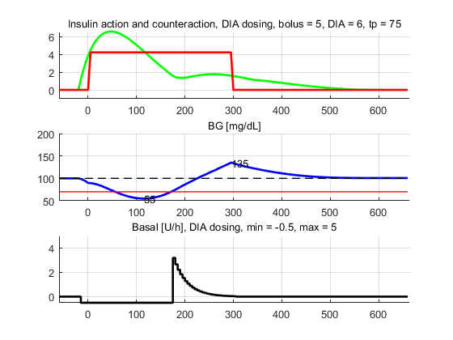

global DIA;
global ISF;
global CIR;
global n_sim;
meal_carbs = 50;
meal_absorption_time = 5*60;
meal_start_time = 60;
pre_bolus_time = 20;
bg_initial = 100;
algorithm.bolus = false;
algorithm.temp = false;
algorithm.accept = true;
algorithm.alpha = 0.5;
sim_time = 12;
pause_times = [];
DIA = 6;
ISF = 50;
CIR = 10;
bg_target_max = 100;
bg_target_min = 100;
bg_guard = 70;
bg_target = (bg_target_max+bg_target_min)/2;
basal_rate = 0.5;
max_temp_rate = 5.0;
min_temp_rate = -basal_rate;
n_sim = round(sim_time*60/5)+1;
sim_time_minutes = n_sim*5;
times = 0:5:(n_sim-1)*5;
n_bolus = round((meal_start_time - pre_bolus_time)/5)+1;
nDIA = round(DIA*60/5)+1;
td = DIA*60;
tp = 75;
tau = tp*(td-tp)/(td-2*tp);
S = ((td/tau)^2)*exp(td/tau)/((td-2*tau)*exp(td/tau)+td+2*tau);
Ia = @(t) S.*(t./td).*(1-t./td).*exp(-t/tau);
IOB = @(t) 1-(S/td).*(tau/td).*(exp(-t/tau).*(t.^2 - td*(t+tau) +2*tau^2 + 2*tau*t)+tau*(td-2*tau));
low_temp_scale = -(min_temp_rate/60)*ISF;
BGTempImpact = @(t) low_temp_scale*(S/td)*(tau/td)*tau*...
(exp(-t/tau).*(-6*tau^2+2*tau*(td-2*t)+t.*(td-t))+...
6*tau^2-2*tau*td-2*tau*t+td*t);
BGtarget = @(t) bg_guard + (bg_target-bg_guard)*t/td;
bg = zeros(n_sim,1);
bg(1) = bg_initial;
bg_predicted = bg;
ci_meal.carbs = meal_carbs;
ci_meal.time = [0 1 meal_absorption_time-1 meal_absorption_time]';
ci_meal.value = [0 1 1 0]';
meal_start = meal_start_time;
ci_meal.start = meal_start/5+1;
ci = ci_generate(ci_meal);
ci_meal_loop = ci_meal;
meal_start_loop = meal_start;
ci_meal_loop.start = meal_start_loop/5+1;
ci_loop = ci_generate(ci_meal_loop);
bg_impact = zeros(n_sim,1);
temp_basal = zeros(n_sim,1);
DIA_times = 5:5:(nDIA-1)*5;
I_activity_array = 5*Ia(0:5:(nDIA-1)*5)';
for i=2:n_sim
if(i == n_bolus)
for j=2:n_sim
bg_predicted(j) = bg_predicted(j-1) + ci.value(j);
end
if(~algorithm.bolus)
bolus = (bg_predicted(i+nDIA-1)-bg_target)/ISF;
bolus = max(0,bolus);
else
suggested_bolus_array = ...
(bg_predicted(i+1:i+nDIA-1)+algorithm.alpha*BGTempImpact(DIA_times)'-BGtarget(DIA_times)')./ ...
(1-IOB(DIA_times)')/ISF;
bolus = min(suggested_bolus_array);
bolus = max(0,bolus);
end
if(~algorithm.accept)
bolus = 0;
end
bg_impact(i:i+nDIA-1) = bg_impact(i:i+nDIA-1)+bolus*ISF*I_activity_array;
end
bg(i) = bg(i-1) + ci.value(i)- bg_impact(i);
if( i>= n_bolus)
bg_predicted = bg;
else
bg_predicted = bg_initial*ones(n_sim,1);
end
if(i+nDIA <= n_sim)
if(i >= n_bolus)
for j=i+1:n_sim
bg_predicted(j) = bg_predicted(j-1) + ci.value(j)-bg_impact(j);
end
end
if any(pause_times == i)
clf;
plot(ci.time,bg_predicted,'k','LineWidth',2);
disp(bg_predicted(i+nDIA));
grid on;
pause;
end
if(i >= n_bolus)
if(~algorithm.temp)
five_minute_dose = ((bg_predicted(i+nDIA)-bg_target)/ISF)*5/30;
else
suggested_dose_array = ...
(bg_predicted(i+1:i+nDIA-1)-BGtarget(DIA_times)')./ ...
(1-IOB(DIA_times)')/ISF;
suggested_dose = min(suggested_dose_array);
five_minute_dose = suggested_dose*5/30;
end
else
five_minute_dose = 0;
end
if(five_minute_dose*60/5 > max_temp_rate)
five_minute_dose = max_temp_rate*5/60;
end
if(five_minute_dose*60/5 < min_temp_rate)
five_minute_dose = min_temp_rate*5/60;
end
if any(bg_predicted(i+1:n_sim) < bg_guard)
five_minute_dose = min_temp_rate*5/60;
end
bg_impact(i+1:i+nDIA) = bg_impact(i+1:i+nDIA)+ ...
five_minute_dose*ISF*I_activity_array;
temp_basal(i+1) = five_minute_dose*60/5;
end
end
[BGmin, indexBGmin] = min(bg);
[BGmax, indexBGmax] = max(bg);
fprintf('\ndosing algorithm options\n');
disp(algorithm);
fprintf('bolus = %4.2f\n',bolus);
fprintf('maximum BG = %3.0f\n',BGmax);
fprintf('minimum BG = %3.0f\n',BGmin);
plot_times = ci.time-meal_start_time;
[xt,yt] = stairs(ci.time,temp_basal);
strmin = num2str(round(BGmin));
strmax = num2str(round(BGmax));
if(algorithm.bolus)
titlestr = ['dynamic dosing, \alpha = ' num2str(algorithm.alpha)];
else
titlestr = 'DIA dosing';
end
if(algorithm.accept)
bolusstr = [', bolus = ' num2str(round(bolus,2))];
else
bolusstr = ', skip bolus';
end
if(algorithm.temp)
tempstr = ['dynamic dosing, min = ' num2str(min_temp_rate) ', max = ' num2str(max_temp_rate) ];
else
tempstr = ['DIA dosing, min = ' num2str(min_temp_rate) ', max = ' num2str(max_temp_rate) ];
end
if(algorithm.bolus)
if(algorithm.temp)
figure(1);
else
figure(2);
end
else
figure(3);
end
clf;
subplot(3,1,1)
hold on;
plot(plot_times,bg_impact,'g','LineWidth',2);
plot(plot_times,ci.value,'r','LineWidth',2);
axis([-meal_start_time ...
sim_time_minutes-meal_start_time ...
-1 inf]);
title(['Insulin action and counteraction, ' titlestr bolusstr ...
', DIA = ' num2str(DIA) ', tp = ' num2str(tp)],...
'FontSize',10,'FontWeight','normal');
grid on;
hold off;
subplot(3,1,2)
hold on;
plot(plot_times,bg,'b','LineWidth',2);
plot(plot_times,bg_guard*ones(n_sim,1),'r','LineWidth',1);
plot(plot_times,bg_target*ones(n_sim,1),'--k','LineWidth',1);
grid on;
axis([-meal_start_time ...
sim_time_minutes-meal_start_time ...
50 200]);
title('BG [mg/dL]','FontSize',10,'FontWeight','normal');
text(plot_times(indexBGmin),BGmin,strmin);
text(plot_times(indexBGmax),BGmax,strmax);
hold off;
subplot(3,1,3)
hold on;
plot(xt-meal_start_time,yt,'k','LineWidth',2);
grid on;
axis([-meal_start_time ...
sim_time_minutes-meal_start_time ...
min_temp_rate max_temp_rate]);
title(['Basal [U/h], ' tempstr], ...
'FontSize',10,'FontWeight','normal');
hold off;
dosing algorithm options
bolus: 0
temp: 0
accept: 1
alpha: 0.5000
bolus = 5.00
maximum BG = 135
minimum BG = 55
